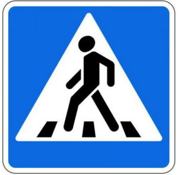
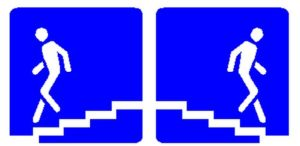
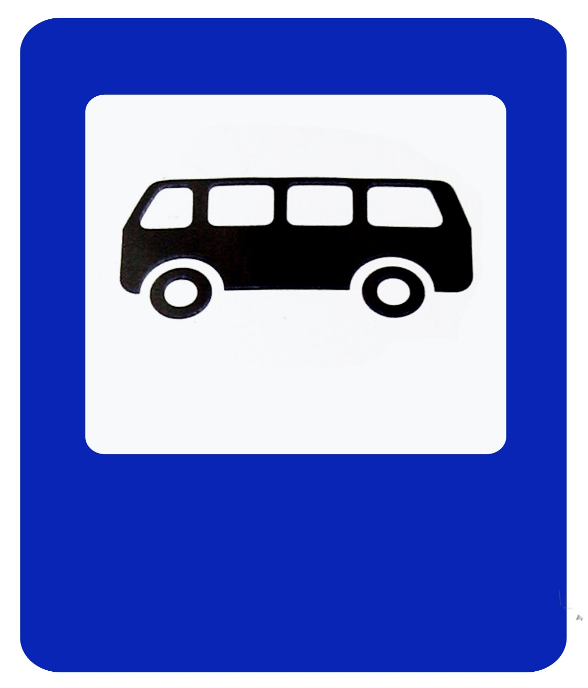
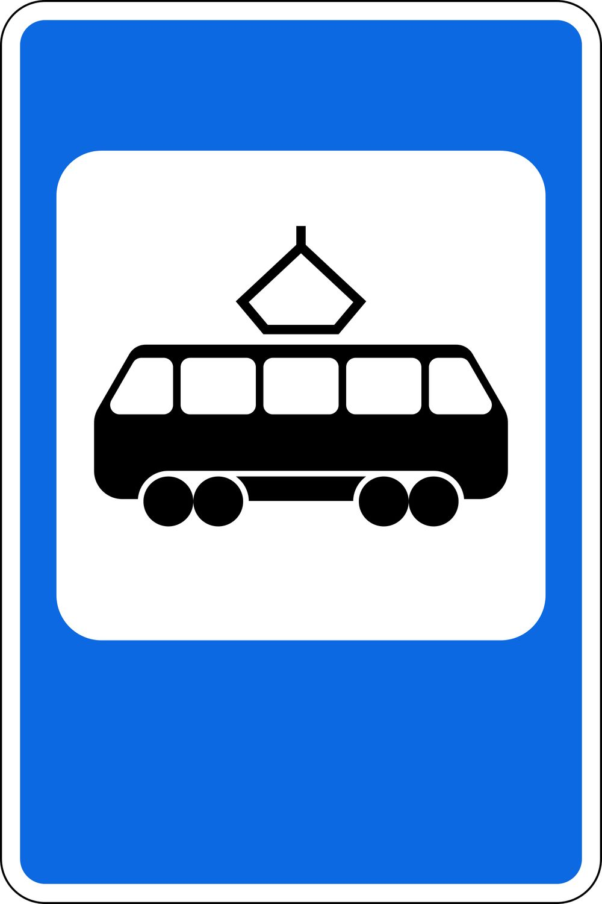
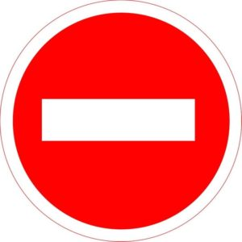
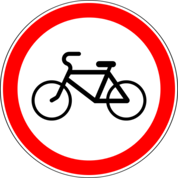
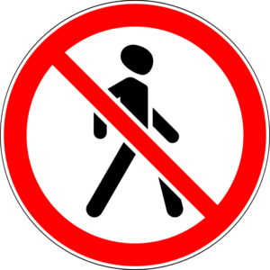

Предписывающие знаки
Нажмите на каждое изображение и прочитайте информацию о знаках


На своем пути каждый пешеход встречает те или иные знаки дорожного движения. И лучше, если он будет осведомлен об их значениях, чтобы не попасть в неловкую ситуацию. Все дорожные знаки для пешеходов предназначены, в первую очередь, для информирования и предостережения их во время пешего передвижения по улице.
|  Пешеходный переход |
Такой знак информирует пешеходов о том, что на конкретном участке дороги есть возможность пересечь проезжую часть. Имеет он квадратную форму. А такой же знак, но треугольной формы, предназначен для автомобилистов, которые должны быть в этой зоне предельно внимательными и пропускать пешеходов. Согласно пдд, устанавливаться такой информационный указатель должен возле «зебры», особой разметке на дороге, по которой следует двигаться пешеходам во время движения через проезжую часть. |
|  Подземный переход |
Также является информационным указателем. И он информирует граждан о наличии подземного перехода, которым необходимо воспользоваться при необходимости перейти дорогу. Особенно важно обучить этому знаку детей, чтобы они всегда использовали именно подземный переход, а не перебегали через проезжую часть. |
|  Остановка автобуса |
Предназначен для информирования граждан о том, то в данном месте производится остановка маршрутных транспортных средств. Установлен такой знак, должен быть непосредственно у места посадки пассажиров. Он имеет прямоугольную форму с изображением автобуса внутри. |
| 
Остановка трамвая |
Значение схоже с предыдущим знаком, только будет нести в себе информацию о непосредственном месте, где останавливаются трамваи. Устанавливается также в непосредственной близости от места остановки транспортного средства. Очень важно объяснить маленьким детям правила поведения в таких местах, и насколько опасно может быть, если неожиданно выбежать на проезжую часть. |
Предписывающие знаки
Нажмите на каждое изображение и прочитайте информацию о знаках
Запрещающие знаки
Нажмите на каждое изображение и прочитайте информацию о знаках
  